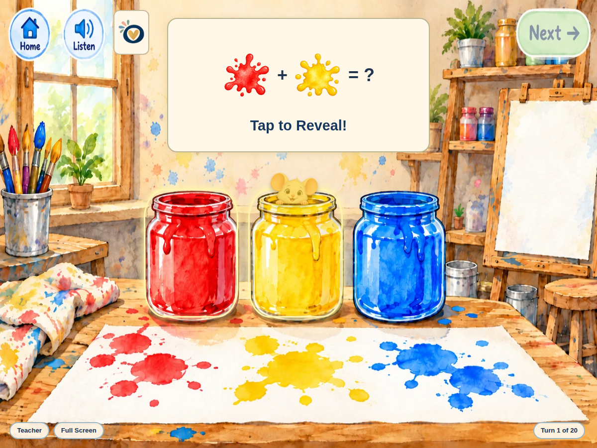

Book Companion Games
Mouse Paint
Choose two paint colors with Mouse, predict the mixture and reveal matching paw prints on the easel.
Free
Ways to use it
- Explore red, yellow and blue mixtures.
- Make a prediction, then describe the color revealed.
How to play
- Choose two different paint jars.
- Say your prediction aloud, then tap the color panel to reveal the mixture.
- Use Next to move to the next turn.
Practical details
Teacher settings allow 1–999 turns. The three mixtures repeat. There is no timer or penalty; the teacher controls the pace.
Explore together
Invite children to explain what they notice and talk through their choices.
Get the Book
Pair this activity with Mouse Paint. The book is sold separately.
As an Amazon Associate I earn from qualifying purchases.
Choose an edition on Amazon. This independent classroom companion is not affiliated with the author or publisher.